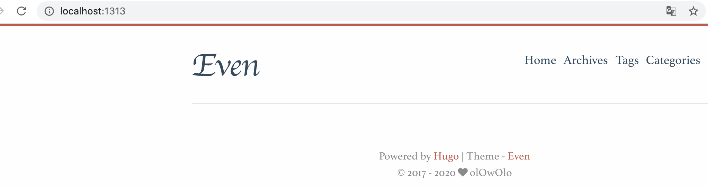
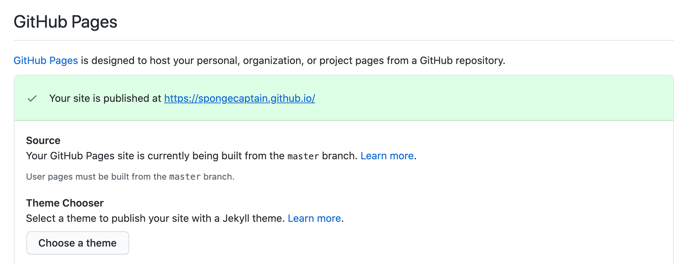
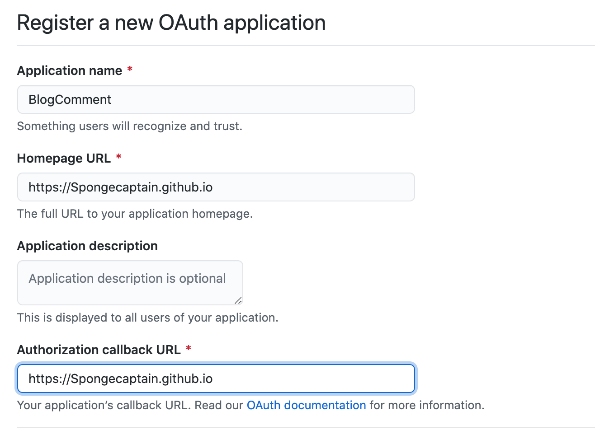
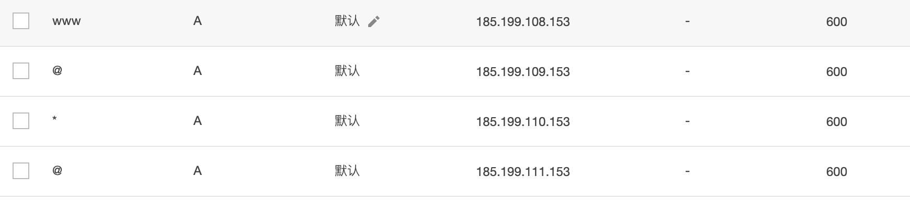
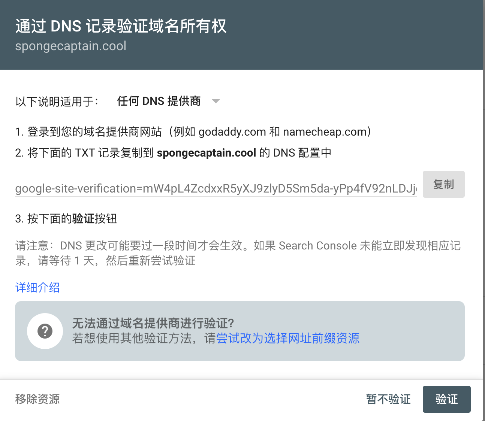

Hugo 博客搭建指北
自己曾经搭建过基于 Hexo 的博客，由于诸多原因弃之，在此启用 Hugo 作为静态博客。
1. 安装 Hugo
1
2
|
brew install hugo # 安装 Hugo
hugo version # 安装版本查询，成功则说明正确
|
2. GitHub 上创建 Repository
创建项目名为 “用户名” + github.io 的仓库，比我的仓库名为 Spongecaptain.github.io。
3. 初始化
安装好 Hugo 软件后需要制定我们在哪里存储本地博客相关的配置和静态文件，比如：
在本地选择一个你打算存放上述文件的路径，比如我选择~/myblog，然后执行如下命令，生产一个 Hugo 的 workspace：
1
2
3
4
|
cd ~
hugo new sitet myblog
cd myBlog
tree # 查看 workspace 的目录结构
|
此时的目录结构如下所示：
1
2
3
4
5
6
7
8
|
.
├── archetypes # 储存.md的模板文件，新建一个 .md 文件时，就会按此模版创建
├── content # 储存网站的所有内容，写的 md 文章存放在这里
├── data # 保存站点可使用的配置文件
├── layouts # 网站模版，选择主题后会将主题中的 layouts 文件夹中的内容复制到此文件夹中
├── static # 包含 CSS、JavaScript、Fonts、media 等，决定网站的外观。选择主题后会将主题中的 ststic 文件夹中的内容复制到此文件夹中
├── themes # 存放主题文件
└── config.toml # 网站的配置文件
|
接着我们需要导入主题，如下：
这里以主题 hugo-theme-even 为例。
1
2
|
cd ~/myblog
git clone https://github.com/olOwOlo/hugo-theme-even themes/even
|
不同的主题会有不同的安装要求，对于 Even 的配置见 hugo-theme-even/README-zh.md 文件。
接着就可以尝试创建首个页面，如下所示：
1
2
|
cd ~/myblog
hugo new about.md
|
~/myblog/content/about.md created
自动生产的内容如下：
1
2
3
4
5
6
7
|
cd ~/myblog
cat content/about.md
---
title: "About"
date: 2020-07-07T00:02:06+08:00
draft: true
---
|
两条 --- 间的信息是 md 文章的 metadata，其含义如下：
title: # 文章标题date: # 写作时间draft: # 是否为草稿，如果为 true 需要在命令中加入 --buildDrafts 参数才会生成这个文档
以下需要自行添加:
description: # 描述tags: # 标签，用于文章分类
根据不同的模板文件的配置，会有不同的 metadatea。
4. 配置文件修改
~/myblog/config.toml 用于存放整个网站的配置信息。
默认配置如下：
1
2
3
|
baseURL = "http://example.org/"
languageCode = "en-us"
title = "My New Hugo Site"
|
baseURL 是个性化 URL 的含义，如果要部署在 GitHub 上，那么就写为：" https://Spongecaptain.github.io"，如果有自己的域名，那么就写自己的域名即可。
Even 主题默认的 config.toml 配置文件如下，需要将 ~/myblog/ 下的配置文件替换掉。
1
2
3
4
5
6
7
8
9
10
11
12
13
14
15
16
17
18
19
20
21
22
23
24
25
26
27
28
29
30
31
32
33
34
35
36
37
38
39
40
41
42
43
44
45
46
47
48
49
50
51
52
53
54
55
56
57
58
59
60
61
62
63
64
65
66
67
68
69
70
71
72
73
74
75
76
77
78
79
80
81
82
83
84
85
86
87
88
89
90
91
92
93
94
95
96
97
98
99
100
101
102
103
104
105
106
107
108
109
110
111
112
113
114
115
116
117
118
119
120
121
122
123
124
125
126
127
128
129
130
131
132
133
134
135
136
137
138
139
140
141
142
143
144
145
146
147
148
149
150
151
152
153
154
155
156
157
158
159
160
161
162
163
164
165
166
167
168
169
170
171
172
173
174
175
176
177
178
179
180
181
182
183
184
185
186
187
188
189
190
191
192
193
194
195
196
197
198
199
200
201
202
203
204
205
206
207
208
209
210
211
212
213
214
215
216
217
218
219
220
221
222
|
baseURL = "http://localhost:1313/"
languageCode = "en"
defaultContentLanguage = "en" # en / zh-cn / ... (This field determines which i18n file to use)
title = "Even - A super concise theme for Hugo"
preserveTaxonomyNames = true
enableRobotsTXT = true
enableEmoji = true
theme = "even"
enableGitInfo = false # use git commit log to generate lastmod record # 可根据 Git 中的提交生成最近更新记录。
# Syntax highlighting by Chroma. NOTE: Don't enable `highlightInClient` and `chroma` at the same time!
pygmentsOptions = "linenos=table"
pygmentsCodefences = true
pygmentsUseClasses = true
pygmentsCodefencesGuessSyntax = true
hasCJKLanguage = true # has chinese/japanese/korean ? # 自动检测是否包含 中文\日文\韩文
paginate = 5 # 首页每页显示的文章数
disqusShortname = "" # disqus_shortname
googleAnalytics = "" # UA-XXXXXXXX-X
copyright = "" # default: author.name ↓ # 默认为下面配置的author.name ↓
[author] # essential # 必需
name = "olOwOlo"
[sitemap] # essential # 必需
changefreq = "weekly"
priority = 0.5
filename = "sitemap.xml"
[[menu.main]] # config your menu # 配置目录
name = "Home"
weight = 10
identifier = "home"
url = "/"
[[menu.main]]
name = "Archives"
weight = 20
identifier = "archives"
url = "/post/"
[[menu.main]]
name = "Tags"
weight = 30
identifier = "tags"
url = "/tags/"
[[menu.main]]
name = "Categories"
weight = 40
identifier = "categories"
url = "/categories/"
[params]
version = "4.x" # Used to give a friendly message when you have an incompatible update
debug = false # If true, load `eruda.min.js`. See https://github.com/liriliri/eruda
since = "2017" # Site creation time # 站点建立时间
# use public git repo url to link lastmod git commit, enableGitInfo should be true.
# 指定 git 仓库地址，可以生成指向最近更新的 git commit 的链接，需要将 enableGitInfo 设置成 true.
gitRepo = ""
# site info (optional) # 站点信息（可选，不需要的可以直接注释掉）
logoTitle = "Even" # default: the title value # 默认值: 上面设置的title值
keywords = ["Hugo", "theme","even"]
description = "Hugo theme even example site."
# paginate of archives, tags and categories # 归档、标签、分类每页显示的文章数目，建议修改为一个较大的值
archivePaginate = 5
# show 'xx Posts In Total' in archive page ? # 是否在归档页显示文章的总数
showArchiveCount = false
# The date format to use; for a list of valid formats, see https://gohugo.io/functions/format/
dateFormatToUse = "2006-01-02"
# show word count and read time ? # 是否显示字数统计与阅读时间
moreMeta = false
# Syntax highlighting by highlight.js
highlightInClient = false
# 一些全局开关，你也可以在每一篇内容的 front matter 中针对单篇内容关闭或开启某些功能，在 archetypes/default.md 查看更多信息。
# Some global options, you can also close or open something in front matter for a single post, see more information from `archetypes/default.md`.
toc = true # 是否开启目录
autoCollapseToc = false # Auto expand and collapse toc # 目录自动展开/折叠
fancybox = true # see https://github.com/fancyapps/fancybox # 是否启用fancybox（图片可点击）
# mathjax
mathjax = false # see https://www.mathjax.org/ # 是否使用mathjax（数学公式）
mathjaxEnableSingleDollar = false # 是否使用 $...$ 即可進行inline latex渲染
mathjaxEnableAutoNumber = false # 是否使用公式自动编号
mathjaxUseLocalFiles = false # You should install mathjax in `your-site/static/lib/mathjax`
postMetaInFooter = true # contain author, lastMod, markdown link, license # 包含作者，上次修改时间，markdown链接，许可信息
linkToMarkDown = false # Only effective when hugo will output .md files. # 链接到markdown原始文件（仅当允许hugo生成markdown文件时有效）
contentCopyright = '' # e.g. '<a rel="license noopener" href="https://creativecommons.org/licenses/by-nc-nd/4.0/" target="_blank">CC BY-NC-ND 4.0</a>'
changyanAppid = "" # Changyan app id # 畅言
changyanAppkey = "" # Changyan app key
livereUID = "" # LiveRe UID # 来必力
baiduPush = false # baidu push # 百度
baiduAnalytics = "" # Baidu Analytics
baiduVerification = "" # Baidu Verification
googleVerification = "" # Google Verification # 谷歌
# Link custom CSS and JS assets
# (relative to /static/css and /static/js respectively)
customCSS = []
customJS = []
uglyURLs = false # please keep same with uglyurls setting
[params.publicCDN] # load these files from public cdn # 启用公共CDN，需自行定义
enable = true
jquery = '<script src="https://cdn.jsdelivr.net/npm/jquery@3.2.1/dist/jquery.min.js" integrity="sha256-hwg4gsxgFZhOsEEamdOYGBf13FyQuiTwlAQgxVSNgt4=" crossorigin="anonymous"></script>'
slideout = '<script src="https://cdn.jsdelivr.net/npm/slideout@1.0.1/dist/slideout.min.js" integrity="sha256-t+zJ/g8/KXIJMjSVQdnibt4dlaDxc9zXr/9oNPeWqdg=" crossorigin="anonymous"></script>'
fancyboxJS = '<script src="https://cdn.jsdelivr.net/npm/@fancyapps/fancybox@3.1.20/dist/jquery.fancybox.min.js" integrity="sha256-XVLffZaxoWfGUEbdzuLi7pwaUJv1cecsQJQqGLe7axY=" crossorigin="anonymous"></script>'
fancyboxCSS = '<link rel="stylesheet" href="https://cdn.jsdelivr.net/npm/@fancyapps/fancybox@3.1.20/dist/jquery.fancybox.min.css" integrity="sha256-7TyXnr2YU040zfSP+rEcz29ggW4j56/ujTPwjMzyqFY=" crossorigin="anonymous">'
timeagoJS = '<script src="https://cdn.jsdelivr.net/npm/timeago.js@3.0.2/dist/timeago.min.js" integrity="sha256-jwCP0NAdCBloaIWTWHmW4i3snUNMHUNO+jr9rYd2iOI=" crossorigin="anonymous"></script>'
timeagoLocalesJS = '<script src="https://cdn.jsdelivr.net/npm/timeago.js@3.0.2/dist/timeago.locales.min.js" integrity="sha256-ZwofwC1Lf/faQCzN7nZtfijVV6hSwxjQMwXL4gn9qU8=" crossorigin="anonymous"></script>'
flowchartDiagramsJS = '<script src="https://cdn.jsdelivr.net/npm/raphael@2.2.7/raphael.min.js" integrity="sha256-67By+NpOtm9ka1R6xpUefeGOY8kWWHHRAKlvaTJ7ONI=" crossorigin="anonymous"></script> <script src="https://cdn.jsdelivr.net/npm/flowchart.js@1.8.0/release/flowchart.min.js" integrity="sha256-zNGWjubXoY6rb5MnmpBNefO0RgoVYfle9p0tvOQM+6k=" crossorigin="anonymous"></script>'
sequenceDiagramsCSS = '<link rel="stylesheet" href="https://cdn.jsdelivr.net/gh/bramp/js-sequence-diagrams@2.0.1/dist/sequence-diagram-min.css" integrity="sha384-6QbLKJMz5dS3adWSeINZe74uSydBGFbnzaAYmp+tKyq60S7H2p6V7g1TysM5lAaF" crossorigin="anonymous">'
sequenceDiagramsJS = '<script src="https://cdn.jsdelivr.net/npm/webfontloader@1.6.28/webfontloader.js" integrity="sha256-4O4pS1SH31ZqrSO2A/2QJTVjTPqVe+jnYgOWUVr7EEc=" crossorigin="anonymous"></script> <script src="https://cdn.jsdelivr.net/npm/snapsvg@0.5.1/dist/snap.svg-min.js" integrity="sha256-oI+elz+sIm+jpn8F/qEspKoKveTc5uKeFHNNVexe6d8=" crossorigin="anonymous"></script> <script src="https://cdn.jsdelivr.net/npm/underscore@1.8.3/underscore-min.js" integrity="sha256-obZACiHd7gkOk9iIL/pimWMTJ4W/pBsKu+oZnSeBIek=" crossorigin="anonymous"></script> <script src="https://cdn.jsdelivr.net/gh/bramp/js-sequence-diagrams@2.0.1/dist/sequence-diagram-min.js" integrity="sha384-8748Vn52gHJYJI0XEuPB2QlPVNUkJlJn9tHqKec6J3q2r9l8fvRxrgn/E5ZHV0sP" crossorigin="anonymous"></script>'
# Display a message at the beginning of an article to warn the readers that it's content may be outdated.
# 在文章开头显示提示信息，提醒读者文章内容可能过时。
[params.outdatedInfoWarning]
enable = false
hint = 30 # Display hint if the last modified time is more than these days ago. # 如果文章最后更新于这天数之前，显示提醒
warn = 180 # Display warning if the last modified time is more than these days ago. # 如果文章最后更新于这天数之前，显示警告
[params.gitment] # Gitment is a comment system based on GitHub issues. see https://github.com/imsun/gitment
owner = "" # Your GitHub ID
repo = "" # The repo to store comments
clientId = "" # Your client ID
clientSecret = "" # Your client secret
[params.utterances] # https://utteranc.es/
owner = "" # Your GitHub ID
repo = "" # The repo to store comments
[params.gitalk] # Gitalk is a comment system based on GitHub issues. see https://github.com/gitalk/gitalk
owner = "" # Your GitHub ID
repo = "" # The repo to store comments
clientId = "" # Your client ID
clientSecret = "" # Your client secret
# Valine.
# You can get your appid and appkey from https://leancloud.cn
# more info please open https://valine.js.org
[params.valine]
enable = false
appId = '你的appId'
appKey = '你的appKey'
notify = false # mail notifier , https://github.com/xCss/Valine/wiki
verify = false # Verification code
avatar = 'mm'
placeholder = '说点什么吧...'
visitor = false
[params.flowchartDiagrams]# see https://blog.olowolo.com/example-site/post/js-flowchart-diagrams/
enable = false
options = ""
[params.sequenceDiagrams] # see https://blog.olowolo.com/example-site/post/js-sequence-diagrams/
enable = false
options = "" # default: "{theme: 'simple'}"
[params.busuanzi] # count web traffic by busuanzi # 是否使用不蒜子统计站点访问量
enable = false
siteUV = true
sitePV = true
pagePV = true
[params.reward] # 文章打赏
enable = false
wechat = "/path/to/your/wechat-qr-code.png" # 微信二维码
alipay = "/path/to/your/alipay-qr-code.png" # 支付宝二维码
[params.social] # 社交链接
a-email = "mailto:your@email.com"
b-stack-overflow = "http://localhost:1313"
c-twitter = "http://localhost:1313"
d-facebook = "http://localhost:1313"
e-linkedin = "http://localhost:1313"
f-google = "http://localhost:1313"
g-github = "http://localhost:1313"
h-weibo = "http://localhost:1313"
i-zhihu = "http://localhost:1313"
j-douban = "http://localhost:1313"
k-pocket = "http://localhost:1313"
l-tumblr = "http://localhost:1313"
m-instagram = "http://localhost:1313"
n-gitlab = "http://localhost:1313"
o-bilibili = "http://localhost:1313"
# See https://gohugo.io/about/hugo-and-gdpr/
[privacy]
[privacy.googleAnalytics]
anonymizeIP = true # 12.214.31.144 -> 12.214.31.0
[privacy.youtube]
privacyEnhanced = true
# 将下面这段配置取消注释可以使 hugo 生成 .md 文件
# Uncomment these options to make hugo output .md files.
#[mediaTypes]
# [mediaTypes."text/plain"]
# suffixes = ["md"]
#
#[outputFormats.MarkDown]
# mediaType = "text/plain"
# isPlainText = true
# isHTML = false
#
#[outputs]
# home = ["HTML", "RSS"]
# page = ["HTML", "MarkDown"]
# section = ["HTML", "RSS"]
# taxonomy = ["HTML", "RSS"]
# taxonomyTerm = ["HTML"]
|
5. 本地运行静态博客
设置完 config.toml 后我们执行以下命令就可以在本地试着访问静态博客了：
1
|
hugo server --buildDrafts -w
|
因为在 config.toml 文件中配置 baseURL 为 http://localhost:1313/，因此我们访问这个地址即可。
此时的显示效果如下：

--buildDrafts: 生成被标记为 「草稿」 的文档；-w: 监控更改，如果发生更改直接显示到博客上；
6. 发布到 GitHubPage
首先配置 config.toml 文件的 baseURL 属性为 GitHub 的项目地址，比如我这里是：
执行如下命令：
此时你的博客目录下会多出一个 public 文件夹来。这便是 Hugo 生成的静态文件网站，其目录结构如下：
1
2
3
4
5
6
7
8
9
10
11
|
tree -L 1
.
├── archetypes
├── config.toml
├── content
├── data
├── layouts
├── public
├── resources
├── static
└── themes
|
接着我们需要进入 public 目录下，初始化 Repository，如下：
1
2
3
4
5
6
|
cd ~/myblog/public
git init
git remote add origin https://github.com/[Github 用户名]/[Github 用户名].github.io.git
git add -A
git commit -m "init my static blog"
git push -u origin master
|
接着，我们就能够通过 GitPage 页面访问我们的 about 文章了。
首先在 GitHub 的博客项目上显式如下：

点击它就能够访问了。
7. 创建新文章
创建新文章的命令如下：
1
|
hugo new 目录名（可以省略）/first.md
|
如果没有目录名，则在 ~/myblog/content/ 下直接存放 md 文件，否则在 ~/myblog/content/ 子目录下存放 md 文件。
生成的文章内容如下：
1
2
3
4
5
|
---
title: "First"
date: 2019-06-03T17:10:40+08:00
draft: true
---
|
然后我们对这篇文章修改如下：
1
2
3
4
5
6
7
8
|
---
title: "First"
date: 2020-07-07T00:47:02+08:00
draft:fasle
---
hello world
|
默认情况下 draft 为 true，当然你可以对 default.md 进行修改来更改这个设置，不过如果要发布，那么需要将 draft 值设置为 fasle。
该文章的默认模板是根据 archetypes 目录下的 default.md 来的，可以自己修改模板，比如，修改文章的时间格式：
1
2
3
4
5
6
7
8
|
---
title: "{{ replace .Name "-" " " | title }}"
date: {{ now.Format "2006-01-02" }}
draft: false
categories: []
tags: []
toc: false
---
|
接着运行入如下命令：
1
2
3
4
5
6
|
cd ~/myblog
hugo # 生成静态 html
cd public
git add .
git commit -m "my first page"
git push
|
最后通过访问 https://spongecaptain.github.io/first/ 就能读到 md 对应生成的 html 静态页面。
8. 引入 GitTalk 评论系统
首先要去 GitHub 上创建一个 Github Application，如果此时没有个性域名，那么可以都填入 github.io 地址，如下：
记下 Client ID 和 Client Secret，因为我使用的是 Even 主题，因此直接在配置文件中填入响应内容即可。
-
将 [Client ID] 替换为 Github Application 的 Client ID
-
将 [Client Secret] 替换为 Github Application 的 Client Secret
-
将 repo 设置为博客 repo 名即可，比如我这里的 Spongecaptain.github.io
-
将 owner 设置为你的 GitHub ID
9. 独立域名配置
-
购买好域名后，首先在博客的 Rop 的 Setting 中，在 Custom domain 这里填上你购买的域名。
-
接着我们要在 ~/myblog/public/ 目录下创建一个名为 CNAME 的文件，文件内容仅写上你拥有的域名。
这一步是不用做的，因为 GitHub 会自动地添加此文件，因此我们需要在本地的 ~/myblog/public 下进行 git pull 即可。
-
最后到你购买域名的商家那里进行 DNS 解析配置，让域名指向正确的 IP 地址，域名解析的 IP 地址为：
1
|
185.199.108.153 185.199.109.153 185.199.110.153 185.199.111.153
|
下面是我的配置：

’接着由于我们添加了个性化域名，需要修改其他配置：
-
GitTalk 中的对应的 GitHub Applicaiton 的 Homepage URL 以及 Authorization callback URL 都修改为你拥有的域名。
-
congfig.toml 配置文件中的 baseURL 修改为个性域名地址。
最后，刚刚设置的 domain 通常不能马上生效，因此需要等待十分钟左右才能够正常通过域名访问博客，不过此时通过 github.io 访问已经是被禁止了。
10. 搜索引擎优化
使搜索引擎能够收录你的网站，可以将文章分享给更多用户。
修改 config.toml 文件，用于修改网站的 metadata：
- logoTitle 网站标题
- keywords 关键字
- description 描述
下面是我的配置：
1
2
3
|
logoTitle = "Spongecaptain's Blog" # default: the title value # 默认值: 上面设置的title值
keywords = ["Java", "分享","博客"]
description = "Spongecaptain 的个人技术博客"
|
打开 Google网站站长，点击 “SEARCH CONSOLE ” 进入，然后添加资源，如spongecaptain.cool，然后通过 DNS 域名验证即可，具体的做法如下：

复制此内容，然后作为记录值加入即可。
由于百度搜索对于个人博客几乎只会在非常靠后的索索结果，因此可以选择不配置。
11. 个性化发布文章
为了更方便地发布文章，我可以修改默认的 ~/myblog/archetypes/default.md 文件为如下格式：
默认如下：
1
2
3
4
5
6
|
---
title: "{{ replace .Name "-" " " | title }}"
date: {{ .Date }}
draft: true
---
|
修改为：
1
2
3
4
5
6
7
8
9
10
11
12
13
14
15
16
17
18
19
20
21
22
23
24
25
26
27
28
29
30
31
32
33
34
35
36
37
38
39
40
41
|
---
title: "{{ replace .TranslationBaseName "-" " " | title }}"
date: {{ .Date }}
lastmod: {{ .Date }}
draft: false
keywords: []
description: ""
tags: []
categories: []
author: "Spongecaptain"
# You can also close(false) or open(true) something for this content.
# P.S. comment can only be closed
comment: true
toc: true
autoCollapseToc: false
postMetaInFooter: false
hiddenFromHomePage: false
# You can also define another contentCopyright. e.g. contentCopyright: "This is another copyright."
contentCopyright: true
reward: false
mathjax: false
mathjaxEnableSingleDollar: false
mathjaxEnableAutoNumber: false
# You unlisted posts you might want not want the header or footer to show
hideHeaderAndFooter: false
# You can enable or disable out-of-date content warning for individual post.
# Comment this out to use the global config.
#enableOutdatedInfoWarning: false
flowchartDiagrams:
enable: false
options: ""
sequenceDiagrams:
enable: false
options: ""
---
|
对于不同的主题发布文章对应的地址可能会有所不同，比如 Even 默认情况下需要将文章发布到 post 目录或者其子目录，发布文章的命令如下：
另一方面，发布的文章如何才能显示图片呢？
如果我们运行 hugo 命令来生成网页，其会自动在 public/ 路径下存放 images 文件夹以及文件。
Hugo在生成页面时，会拷贝静态资源到 public 文件夹，包括：
- 拷贝
theme/static/* 到 public/下
- 拷贝
static/* 到 public/下
- 遍历所有 content/ 下所有文件。
- 获取文件头信息，并把正文 markdown 转换为 html
- 渲染生成相关页面。
- 渲染已生成页面对应的正文页面，生成文件夹对应的列表页面，生成分类页面，生成主页。
因此，如果你的图片引用地址为 ~/myblog/static/images，那么发布后的 html 的图片将引用 public/static/images，但是 Hugo 只会自动地将 static 下的 images 目录拷贝到 public 路径下，因此图片引用会出错。
这里有多种解决办法：
- 每次负责将 ~/myblog/static 目录完整地拷贝一份到 public 目录下；
- 使用图床；
这里我选择不使用 static 目录，而是在 ~/myblog 目录下创建一个 images 目录，其内部还有如下目录：
1
2
3
4
5
6
7
8
|
.
├── img_ComputerNetwork
├── imghugo
├── img_java
├── img_mysql
├── img_netty
├── img_redis
└── img_spring
|
由于我自己的 md 文件放在 ~/myblog/content/post/hugo 路径下，因此我们若要访问到 imghugo 路径下的图片，那么需要设置如下的相对路径：
1
|
../../../images/img_hugo/xx.png
|
如果你的编辑器是 Typora，那么可以添加如下头描述：
1
|
typora-copy-images-to: ../../../images/img_hugo
|
即使我们手动地在配置文件中添加静态文件目录，如下：
Hugo 命令在执行时会手动地替我们将 images 的子目录添加到 public 目录下，因此引用时还是会出错，因此不需要配置这一项。
接着，我们将 images 整个目录拷贝一份到 public 顶级目录即可。
注意事项：相对路径根据 md 文件和图片存放路径的不同而不同。
12. 修改 Hugo Even 主题标题样式
Hugo Even 自带主题的标题样式合适中文标题，为了英文更好看，我决定进行修改。
修改如下文件：~/myblog/themes/even/assets/sass/_partial/_header/_logo.scss
将以下内容覆盖源文件即可：
1
2
3
4
5
6
7
8
9
10
11
12
13
14
15
|
.logo-wrapper {
float: left;
.logo {
font-size: 40px;
font-family: Arial, "Microsoft YaHei", "Hiragino Sans GB", "WenQuanYi Micro Hei", sans-serif;
}
}
@include max-screen() {
.logo-wrapper {
display: none;
}
}
|
当然你可以选择其他字体，我这里推荐的是我认为比较舒适的字体。
类似的操作，修改同级目录下 _menu.scss 文件的字体配置，如下：
1
2
|
# 修改为
font-family: Arial, "Microsoft YaHei", "Hiragino Sans GB", "WenQuanYi Micro Hei", sans-serif;
|
关于字体的推荐：知乎-网页设计中最常用的字体有哪些？（中文和英文）
13. Hugo 常用命令
Hugo 常用命令：
hugo new post/to/your/path xx.md 写一篇文章于 content/to/your/path 路径下；hugo 将 md 转换为 html 文件并写于 public 目录下了；hugo server 开启本地调试，默认地址是：http://localhost:1313/。默认支持动态调试，修改配置文件、md 文档时都会自动生效，直接可以在 html 页面上实时看到变化；- 将 public 目录下的文件推到远端 GitHub Pages 对应的仓库则需要使用
git add . 、git commit -m "这里请描述你做了什么修改"、git push 等命令。
在我看来 Hugo 确实比 Hexo 要现代化不少，可能这就是 Go 语言的魅力吧。